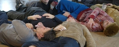
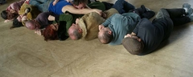
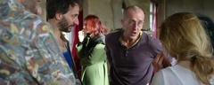
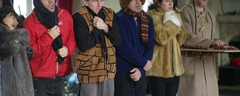
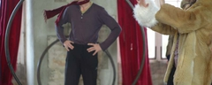
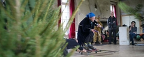
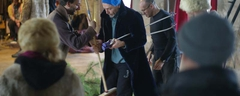

| |
|
 |
Mise en scène Sky de Sela assistée de Cille Lansade
Acrobatie sur Roue Pierre Bertrand
Acrobatie Hyacinthe Reisch
Trapèze Kamma Rosenbeck
Clowns Adèll Nodé-Langlois, Alexandre Demay, Joël Colas
Clown, acrobate, jongleur Jean-Paul Lefeuvre
Comédien, jongleur Jean-Benoît Mollet
Performeuse Cille Lansade
Comédienne et réalisatrice Delphine Lanson
Danse Chiharu Mamiya
Fil de fer Océane Pelpel
Jeux de cirque Bertrand Duval
Jonglerie Jôrg Müller
Dessin en direct Pierre Constantin
Violon Mayeul Loisel
Violoncelle Patrice Wojciechowski
Basse François Pernin
Chant Molly Gruey
Contrebasse Benoît Jayot
Clarinette Julien Thierry
Musicien Sébastien Apert
|
| |
- 
- 
- 
- 
- 
 - 
- 
|
|
Cabaret Cirque
au Théâtre d' Auxerre
54 rue Joubert
89000 Auxerre |
France / Allemagne / Danemark / Suisse / Japon / Amérique
Pour trois soirées exceptionnelles, plus de vingt artistes de cirque et musiciens, issus de prestigieuses compagnies européennes, se rassemblent pour vous présenter un cabaret flamboyant, unique et éphémère. Une proposition vivante, acrobatique et délirante sur «ce qui tient chaud l’hiver».
La recette de cet événement sera intégralement reversée pour les travaux d’installation d’une chaudière au Château de Monthelon à Montréal (Yonne) qui accueille des créateurs du monde entier depuis 23 ans et depuis 7 ans sans chauffage… D’où une série d’interrogations essentielles, prélude à cette fête onirique et extravagante : le climat influence-t-il la création artistique ? La chaleur d’une œuvre est-elle relative à la chaleur du lieu dans laquelle cette œuvre est créée ? Un duo de main à main est-il plus charnel s’il a été conçu en dessous de zéro ? Les artistes scandinaves sont-ils vraiment plus résistants grâce aux conditions météorologiques ? Autant de questions auxquelles acrobates, jongleurs, clowns, trapézistes et autres saltimbanques de haut vol apporteront des réponses renversantes, poétiques ou cocasses, affirmant par la même occasion, la brillante singularité du cirque contemporain.
|
|
| |
|